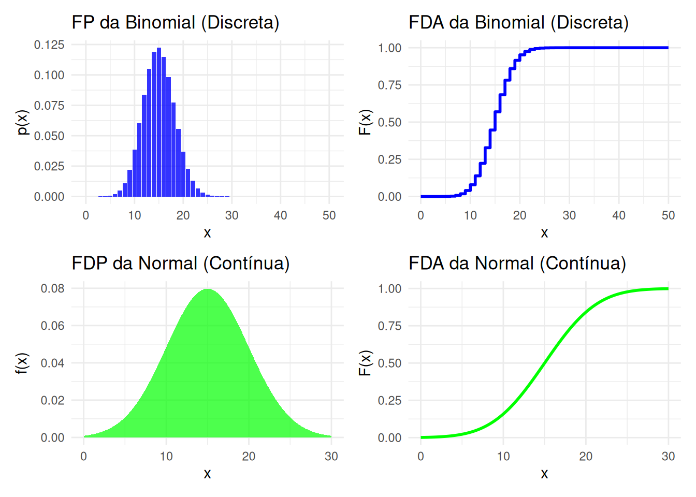

library(tidyverse)
library(patchwork) # Para combinar gráficos8 Principais Modelos Probabilisticos
Nesta aula, apresentamos um catálogo das distribuições de probabilidade mais famosas. Por que precisamos disso?
Pense nessas distribuições como uma “caixa de ferramentas” estatística. Cada distribuição é uma ferramenta diferente, projetada para um tipo específico de problema ou “formato” de dados.
- Para um problema de “clicar ou não clicar” (binário), usamos a “ferramenta” Bernoulli.
- Para “contar o número de cliques em 1000 visitas”, usamos a “ferramenta” Binomial.
- Para “medir o tempo entre cliques”, usamos a “ferramenta” Exponencial.
O trabalho do Cientista de Dados é olhar para um problema (ex: “modelar o churn”) e saber qual ferramenta (distribuição) da caixa é a correta para modelar a realidade. Conhecer este catálogo é o primeiro passo para a modelagem estatística.
8.1 Principais Modelos Discretos
Modelos para v.a.s que representam contagens.
Definição 8.1 (Modelo 1: Uniforme Discreto) Uma v.a. X segue o modelo uniforme discreto com valores \(\{x_1, x_2, \dots, x_k\}\) se \[ \mathbb{P}(X = x_i) = \frac{1}{k}, \quad i=1, 2, \dots, k.\] Notação: \(X \sim U_d[x_1, x_2, \dots, x_k]\).
DicaPerspectiva de Data Science
Este é o modelo da “ignorância total” ou a baseline de aleatoriedade.
- Exemplo: A alocação de um usuário em um Teste A/B/C/D (com \(k=4\) grupos). Sob um design balanceado, a probabilidade de um usuário cair em qualquer grupo é \(1/4\).
- É o “ponto de partida”: se seu modelo de classificação não performa melhor do que a \(U_d\), ele é inútil.
Definição 8.2 (Modelo 2: Bernoulli) Uma v.a. X segue o modelo Bernoulli se \[ \mathbb{P}(X = x) = p^x (1-p)^{1-x}, \quad x=0, 1,\] \(p \in (0, 1)\). Notação: \(X \sim \text{Bernoulli}(p)\).
Experimentos do tipo sucesso (\(x=1\)) e fracasso (\(x=0\)), ensaios de Bernoulli.
DicaPerspectiva de Data Science
- Exemplos:
clicou(1) vs.nao_clicou(0)comprou(1) vs.nao_comprou(0)churn(1) vs.nao_churn(0)fraude(1) vs.nao_fraude(0)
- A taxa de conversão é o parâmetro \(p\).
- Todo problema de classificação binária (Regressão Logística, SVM, etc.) está, em essência, tentando estimar o parâmetro \(p\) (a probabilidade de sucesso) para cada observação.
Definição 8.3 (Modelo 3: Binomial) Uma v.a. X segue o modelo binomial com parâmetros \(n \in \mathbb{N}\) e \(p \in (0, 1)\) se \[ \mathbb{P}(X = x) = \binom{n}{x} p^x (1-p)^{n-x}, \quad x=0, 1, \dots, n.\] Notação: \(X \sim B(n, p)\).
Comentário: A v.a. \(X\) pode ser definida como o número de sucessos (ocorrência de 1) em \(n\) ensaios de Bernoulli independentes, cada um com probabilidade de sucesso \(p\).
DicaPerspectiva de Data Science
A Binomial é a soma de \(n\) Bernoullis. Ela é a base de toda a análise de Testes A/B.
- Exemplo: Se \(n=1000\) usuários (ensaios) visitam uma página, e a taxa de conversão real é \(p=0.05\) (5%), a v.a. \(X\) (o número de conversões que observamos) segue uma \(B(1000, 0.05)\).
- Nós usamos a Binomial para responder: “Se \(p\) realmente fosse 5%, qual a chance de observarmos \(X=60\) conversões? (ou seja, \(\mathbb{P}(X=60)\))”.
Definição 8.4 (Modelo 4: Geométrico 1) Uma v.a. X segue o modelo Geométrico (tipo 1) com parâmetro \(p \in (0, 1)\) se \[\mathbb{P}(X = x) = p (1-p)^x, \quad x=0, 1, 2, \dots\] Notação: \(X \sim \mathrm{Geo}_1(p)\).
Comentários:
- \(X =\) número de fracassos que antecedem o primeiro sucesso em experimentos de Bernoulli independentes.
- Também poderíamos contar o número de tentativas. Neste caso, \(X \sim \mathrm{Geo}_2(p)\) e \[\mathbb{P}(X = x) = p (1-p)^{x-1}, \quad x=1, 2, \dots\]
DicaPerspectiva de Data Science
A Geométrica modela o “tempo de espera” (discreto) até o primeiro sucesso.
- Tipo 1 (Geo1): Número de produtos visualizados (fracassos) antes da primeira compra (sucesso).
- Tipo 2 (Geo2): Número de visitas totais (tentativas) até a primeira conversão. É fundamental para modelar churn (sobrevivência discreta) e time-to-first-event.
Definição 8.5 (Modelo 5: Poisson) Uma v.a. X segue o modelo de Poisson de parâmetro \(\lambda > 0\) se \[\mathbb{P}(X = x) = \frac{e^{-\lambda} \lambda^x}{x!}, \quad x=0, 1, 2, \dots\] Notação: \(X \sim \text{Pois}(\lambda)\).
Comentários:
- X pode modelar o número de ocorrências em um determinado intervalo de tempo.
- \(\lambda\) representa a taxa de ocorrências por unidade de medida.
DicaPerspectiva de Data Science
A Poisson modela contagens de eventos “raros” em um intervalo fixo (de tempo, espaço, etc.).
- Exemplos:
- Número de pageviews em um site por minuto.
- Número de compras de um produto por dia.
- Número de falhas em um servidor por hora.
- O parâmetro \(\lambda\) (lambda) é a taxa média de ocorrências. Se, em média, o site recebe 50 visitas/minuto, modelamos isso como \(X \sim \text{Pois}(\lambda=50)\).
8.2 Principais Modelos Contínuos
Modelos para v.a.s que representam medições.
Definição 8.6 (Modelo 1: Uniforme Contínuo) X segue o modelo uniforme contínuo em \([a, b] \subset \mathbb{R}\) se todos os subintervalos de \([a, b]\) com mesmo comprimento tiverem a mesma probabilidade. A f.d.p. de X é: \[f_X(x) = \frac{1}{b-a} I_{[a, b]}(x)\] Notação: \(X \sim U(a, b)\).
DicaPerspectiva de Data Science
A \(U(a, b)\) é a baseline contínua. É a nossa suposição de “não-sei-nada” sobre uma feature, exceto que ela vive entre \(a\) e \(b\).
- Exemplo: Em simulações, usamos \(U(0, 1)\) para gerar aleatoriedade.
- Teste de Hipótese: Sob a hipótese nula (\(H_0\)), os p-values devem seguir uma distribuição \(U(0, 1)\). Se o histograma dos seus p-values não é plano, algo está errado (ou certo!) no seu experimento.
- Bayesiana: É frequentemente usada como um prior não-informativo.
Definição 8.7 (Modelo 2: Exponencial) Uma v.a. X segue o modelo exponencial de parâmetro \(\lambda > 0\) se: \[f_X(x) = \lambda e^{-\lambda x} I_{(0, \infty)}(x)\] Notação: \(X \sim \text{exp}(\lambda)\).
DicaPerspectiva de Data Science
Esta é a versão contínua da Geométrica. Ela modela o tempo de espera entre eventos de Poisson.
- Exemplos:
tempo_entre_visitasao site.tempo_entre_falhasde um servidor.duracao_da_sessao(assumindo que o usuário pode sair a qualquer momento com a mesma prob., a “falta de memória”).
- \(\lambda\) é a taxa (ex: falhas/dia). \(1/\lambda\) é o tempo médio (ex: dias/falha).
Definição 8.8 (Modelo 3: Normal) Uma v.a. X segue o modelo normal com parâmetros \(\mu \in \mathbb{R}\) e \(\sigma^2 > 0\) se: \[f_X(x) = \frac{1}{\sqrt{2\pi\sigma^2}} \exp\left\{-\frac{1}{2\sigma^2}(x-\mu)^2\right\}, \quad x \in \mathbb{R}\] Notação: \(X \sim N(\mu, \sigma^2)\).
Comentários: 1) \(f(x)\) é simétrica em torno de \(\mu\). 2) Notação para f.d.a. de \(Z \sim N(0, 1): F_Z(z) = \Phi(z)\).
DicaPerspectiva de Data Science
A distribuição mais famosa, graças ao Teorema Central do Limite (TCL).
- O TCL diz que a média de (quase) qualquer coisa, se \(n\) for grande, se aproxima de uma Normal.
- Exemplos:
- A distribuição das
medias_de_sessoes_por_dia. - Os resíduos (erros) de um modelo de Regressão Linear são supostos \(N(0, \sigma^2)\).
- Medidas biológicas (ex: altura), erros de medição, etc.
- A distribuição das
- É a base para o Teste-t, Teste-Z, e grande parte da estatística inferencial clássica.
Definição 8.9 (Modelo 4: Gama) \(X \sim \text{Gama}(\alpha, \beta)\), com \(\alpha, \beta > 0\). \[f_X(x) = \frac{\beta^\alpha}{\Gamma(\alpha)} x^{\alpha-1} e^{-\beta x} I_{(0, \infty)}(x)\] Onde \(\Gamma(\alpha)\) é a função Gama.
DicaPerspectiva de Data Science
Uma versão mais flexível da Exponencial.
- A \(\text{Gama}(\alpha=1, \beta=\lambda)\) é exatamente a \(\text{exp}(\lambda)\).
- Se a Exponencial modela o tempo até o primeiro evento, a Gama modela o tempo até o \(\alpha\)-ésimo evento.
- Exemplo:
tempo_total_de_esperaaté o 10º cliente chegar. - É muito usada em Análise de Sobrevivência e para modelar features contínuas que são estritamente positivas e assimétricas (ex:
valor_monetario,tempo_de_atendimento).
Definição 8.10 (Modelo 5: Beta) \(X \sim \text{Beta}(\alpha, \beta)\), com \(\alpha, \beta > 0\). \[f_X(x) = \frac{\Gamma(\alpha+\beta)}{\Gamma(\alpha)\Gamma(\beta)} x^{\alpha-1} (1-x)^{\beta-1} I_{(0, 1)}(x)\]
DicaPerspectiva de Data Science
A distribuição Beta só vive no intervalo [0, 1].
- Exemplos: Ela modela coisas que são probabilidades, taxas ou proporções.
- O
score_de_propensaode um cliente. - A
taxa_de_clique(CTR) individual de um anúncio. - A
porcentagemde conclusão de um vídeo.
- O
- Bayesiana: É a “parceira” da Binomial (o chamado conjugado prior). Se você modela cliques com uma Binomial, você pode modelar sua crença sobre a taxa \(p\) com uma Beta. É a base da maioria dos Testes A/B Bayesianos.
8.3 Implementação Prática em R
Em R, para cada distribuição (ex: norm), existe uma “família” de 4 funções identificadas por um prefixo. Conhecer esse padrão é essencial.
d*: densidade (f.d.p.) ou f.p. \(f(x)\) ou \(p(x_i)\). Responde “Qual a altura da curva/barra no ponto x?”p*: probabilidade (f.d.a.). \(F(x) = \mathbb{P}(X \le x)\). Responde “Qual a prob. acumulada até x?”q*: quantil. A inversa da f.d.a. Responde “Qual é o valor \(x\) que acumula \(p\) de prob.?” (ex: percentil 95).r*: random. Gera números aleatórios (simulações) dessa distribuição.
Vamos ver na prática.
Exemplo 1: Binomial (Discreta) - Análise de Teste A/B
Suponha um Teste A/B. O grupo de controle tem \(p = 0.05\) (5% de conversão). Coletamos \(n = 1000\) usuários. \(X \sim B(n=1000, p=0.05)\).
# 1. dbinom: Qual a P(exatamente 60 conversões)?
# P(X = 60)
prob_exata <- dbinom(x = 60, size = 1000, prob = 0.05)
cat("P(X = 60):", prob_exata, "\n")P(X = 60): 0.01966966 # 2. pbinom: Qual a P(60 conversões OU MENOS)? (O p-value de um teste)
# P(X <= 60)
prob_acumulada <- pbinom(q = 60, size = 1000, prob = 0.05)
cat("P(X <= 60):", prob_acumulada, "\n")P(X <= 60): 0.9329375 # 3. qbinom: Qual é o 95º percentil? (O limite de "surpresa")
# q tal que P(X <= q) = 0.95
percentil_95 <- qbinom(p = 0.95, size = 1000, prob = 0.05)
cat("Percentil 95:", percentil_95, "conversões\n")Percentil 95: 62 conversões# 4. rbinom: Simular 5 resultados desse experimento
simulacao <- rbinom(n = 5, size = 1000, prob = 0.05)
cat("5 simulações (nº de conversões):", simulacao, "\n")5 simulações (nº de conversões): 63 60 40 56 75 Exemplo 2: Poisson (Discreta) - Tráfego do Site
Nosso site recebe, em média, \(\lambda = 10\) visitas por minuto. \(X \sim \text{Pois}(\lambda=10)\).
# 1. dpois: Qual a P(exatamente 10 visitas em um minuto)?
# P(X = 10)
prob_exata_pois <- dpois(x = 10, lambda = 10)
cat("P(X = 10):", prob_exata_pois, "\n")P(X = 10): 0.12511 # 2. ppois: Qual a P(MAIS de 15 visitas)? (Risco de sobrecarga)
# P(X > 15) = 1 - P(X <= 15)
prob_sobrecarga <- ppois(q = 15, lambda = 10, lower.tail = FALSE)
cat("P(X > 15):", prob_sobrecarga, "\n")P(X > 15): 0.0487404 Exemplo 3: Normal (Contínua) - Tempo de Sessão
O tempo médio de sessão é \(\mu = 120\) segundos, com desvio padrão \(\sigma = 30\) segundos. \(X \sim N(\mu=120, \sigma^2=30^2)\).
# 1. pnorm: Qual a P(sessão durar MENOS de 60 segundos)?
# P(X <= 60)
prob_curta <- pnorm(q = 60, mean = 120, sd = 30)
cat("P(X <= 60s):", prob_curta, "\n")P(X <= 60s): 0.02275013 # 2. qnorm: Qual é o tempo de sessão que 99% dos usuários NÃO ultrapassam?
# q tal que P(X <= q) = 0.99
percentil_99_tempo <- qnorm(p = 0.99, mean = 120, sd = 30)
cat("Percentil 99:", percentil_99_tempo, "segundos\n")Percentil 99: 189.7904 segundos# 3. dnorm: Apenas retorna a "altura" da curva de sino.
# Não é uma probabilidade!
altura_curva_no_pico <- dnorm(x = 120, mean = 120, sd = 30)
cat("Altura da FDP em x=120:", altura_curva_no_pico, "\n")Altura da FDP em x=120: 0.01329808 Visualizando FP/FDP vs. FDA
# 1. Dados para Binomial B(50, 0.3)
df_binom <- tibble(
x = 0:50,
fp = dbinom(x, size = 50, prob = 0.3),
fda = pbinom(x, size = 50, prob = 0.3)
)
# 2. Dados para Normal N(15, 5^2)
df_norm <- tibble(
x = seq(0, 30, length.out = 200),
fdp = dnorm(x, mean = 15, sd = 5),
fda = pnorm(x, mean = 15, sd = 5)
)
# Gráfico 1: Binomial FP (Discreta)
g1 <- ggplot(df_binom, aes(x = x, y = fp)) +
geom_col(fill = "blue", alpha = 0.8) +
labs(title = "FP da Binomial (Discreta)", y = "p(x)") +
theme_minimal()
# Gráfico 2: Binomial FDA (Discreta)
g2 <- ggplot(df_binom, aes(x = x, y = fda)) +
geom_step(color = "blue", linewidth = 1) +
labs(title = "FDA da Binomial (Discreta)", y = "F(x)") +
theme_minimal()
# Gráfico 3: Normal FDP (Contínua)
g3 <- ggplot(df_norm, aes(x = x, y = fdp)) +
geom_area(fill = "green", alpha = 0.7) +
labs(title = "FDP da Normal (Contínua)", y = "f(x)") +
theme_minimal()
# Gráfico 4: Normal FDA (Contínua)
g4 <- ggplot(df_norm, aes(x = x, y = fda)) +
geom_line(color = "green", linewidth = 1) +
labs(title = "FDA da Normal (Contínua)", y = "F(x)") +
theme_minimal()
# Combinar os 4 gráficos
(g1 + g2) / (g3 + g4)